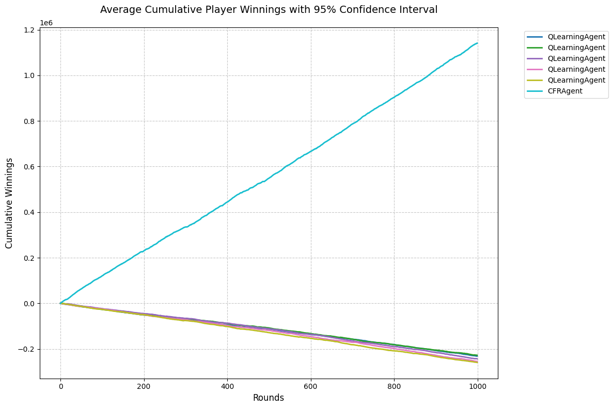
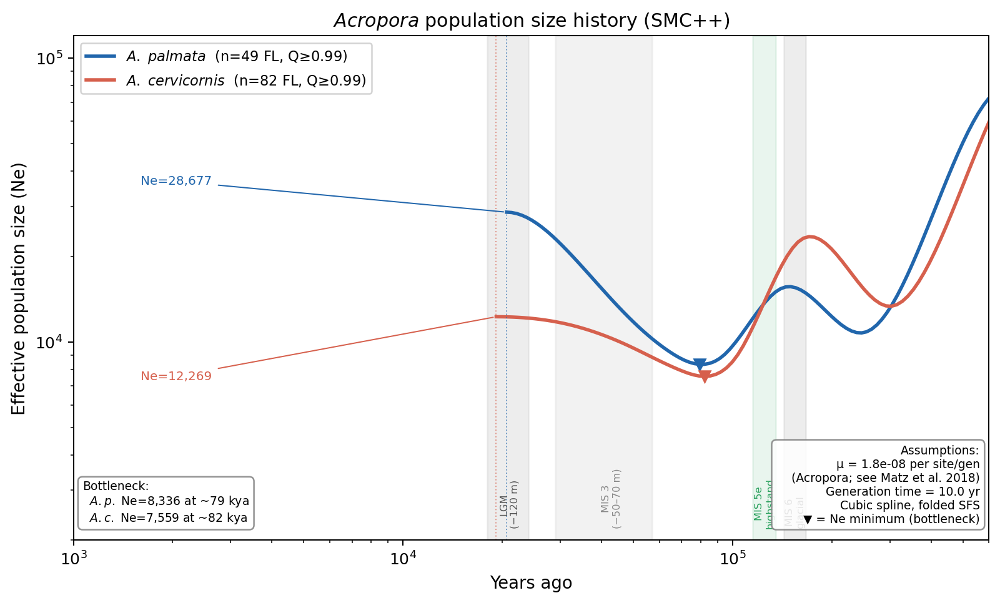
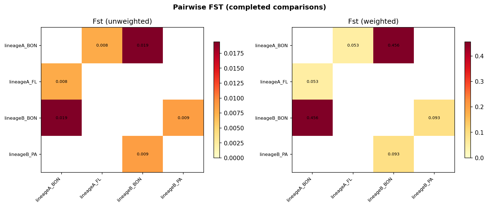

Selected work
Published research, reinforcement learning, cloud-scale bioinformatics, and AI automation. Papers and code are linked where public.
Machine Learning Based Identification of Coral Pathogens

Published in Environmental Microbiology (2024). An ensemble machine learning and SHAP pipeline (Multilayer Perceptron, SVM, Random Forest, Lasso Regression) predicting disease states in endangered Caribbean staghorn coral from 16S rDNA bacterial sequencing data. The best models reached over 97% classification accuracy. SHAP feature-importance analysis identified the bacterial taxa most predictive of disease, surfacing candidate pathogens for further study.
Pythonscikit-learnTensorFlowEnsemble MLSHAPNo-Limit Texas Hold'em Poker Agents
A Multi-Method Approach to Training a Competitive No-Limit Texas Hold'em Poker Agent Using MCTS, CFR, and ReBeL Architectures. Written with Dhananjai Senthil Kumar for Northeastern's Reinforcement Learning course (CS 4180).
Six-player No-Limit Hold'em is a large imperfect-information game; opponents' cards are hidden, the state space is continuous, and strategies that work in two-player poker generally don't scale to a table of six. We modeled the problem as a Markov Decision Process and compared three families of agents: Monte Carlo Tree Search, Counterfactual Regret Minimization (CFR and MCCFR), and a ReBeL-style agent that combines reinforcement learning with regret minimization over public belief states, backed by neural policy, value, and bet-sizing networks.
Across ten trials of 1,000 rounds each, the ReBeL agent consistently outperformed a field of five independent Q-learning agents, with a steadily widening lead in cumulative chips. CFR and MCCFR also beat Q-learning, though both struggled against highly aggressive opponents. Against a more diverse pool, environment-level pot-distribution issues added noise to the results, a limitation we documented in the paper alongside the findings.


Coral Population Genomics Pipeline
A two-pass, Snakemake-orchestrated ANGSD pipeline that runs identically on a workstation, SLURM HPC, or AWS EC2.
The pipeline processes 290 whole-genome resequencing samples from two Caribbean reef-building coral species across Florida, Panama, and Bonaire. After filtering to 253 unrelated individuals, genotype-likelihood analysis retained 2,034,805 SNPs. Downstream analyses include PCA and admixture, pairwise FST, SMC++ demographic reconstruction, recombination mapping, and genotype-environment association for heat tolerance.
Admixture analysis assigned every sample to one species with zero admixed individuals, and FST quantified near-complete reproductive isolation. SMC++ reconstructed both species' histories, including a shared bottleneck in the last glacial period. A single, reproducible heat-tolerance locus emerged, corroborated by an independent introgression signal. While diagnosing a pipeline stall I traced and fixed a units bug in the recombination-mapping step, unblocking all downstream analysis. On the infrastructure side, fault-tolerant AWS spot instances with automated retry, S3 sync, and auto-stop cut compute costs about 70%.



Systems & other projects
Agentic Automation Framework (HOAO)
A hierarchical multi-agent framework (Google ADK, Gemini, FastAPI) built over six iterations. Agents draft a Python tool for a task, sandbox-test it with an auto-repair loop, and hold it for human approval before caching it for reuse. Telemetry-based routing sends each task to a cheaper or more capable model, and a 34-test suite runs in about a second. Deployed on Google Cloud Run under Moviri's AI Labs program.
4-Player Chess AI
A Minimax engine with move ordering, alpha-beta pruning, and search caching for a 2v2 chess variant on a 14x14 board. Beat random-move AI 100% of the time and won about half its games against experienced human players.
Extracting Traffic Data with NLP
An NLP pipeline over the Boston 311 API that extracts and classifies traffic violation reports, automating detection of issues like bike lane obstructions for urban planning.
Image Processing System
A Java MVC application with a GUI supporting image filters, transformations, and format conversions.
GWA Analysis Pipeline (MGH)
Automated genome-wide association analysis of COVID-19 data at Mass General Hospital, with demographic positivity-rate visualizations.